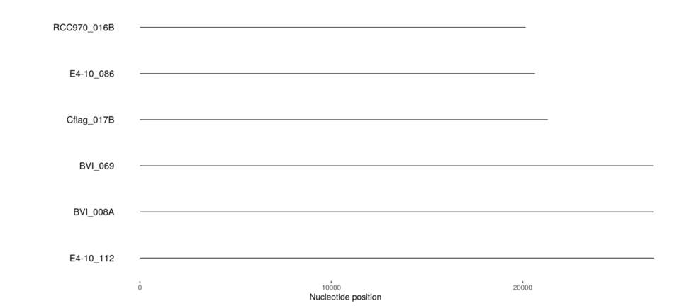
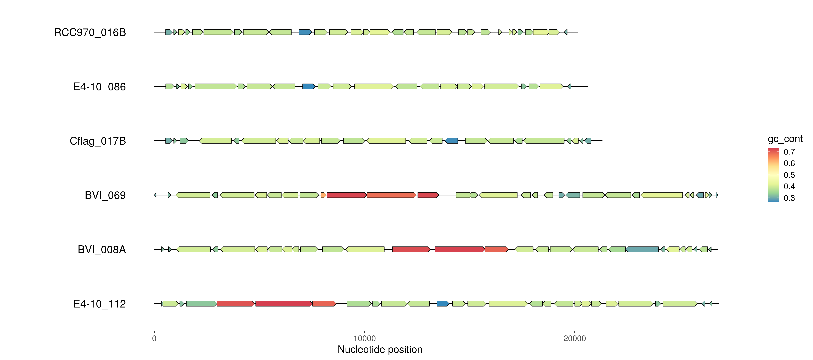
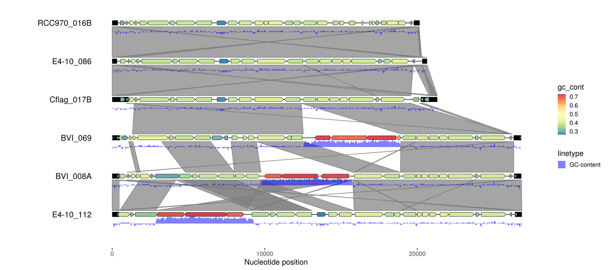

From a few sequences to a complex map in minutes (old version)
Thomas Hackl
2025-11-13
Source:vignettes/emales.Rmd
emales.RmdDISCLAIMER: I’ve created this demo with an early version of gggenomes. Not all of the code will function with current releases. However, the general workflow both with respect to the external tools and gggenomes code is still valid and this demo should therefore be understood as an hopefully inspiring guide - not as an exactly reproducible code example (Those kind of examples you can find in the examples sections of the documentation).
This is a real-life example demonstrating the use of
gggenomes to explore viral genomes. We start with just a
bunch of viral contigs and ask: Is there anything interesting going on
here?
We use a few bioinformatics commandline tools to run some analyzes,
and visualize the results using gggenomes. By successively
adding new data as new tracks we build a rich plot that ultimately
reveals novel insights into an exciting system.
This example is bundled data(package="gggenomes") To
rerun the this example including the bioinformatics analyzes download
the raw
data from github.

Read in the genomes
We start with a fasta file of 33 viral genomes. We read sequence length and some metadata from the header lines using `readfai`…
library(gggenomes)
# parse sequence length and some metadata from fasta file
emale_seqs <- read_fai("emales.fna") %>%
tidyr::extract(seq_desc, into = c("emale_type", "is_typespecies"), "=(\\S+) \\S+=(\\S+)",
remove=F, convert=T) %>%
dplyr::arrange(emale_type, length)
# plot the genomes - first six only to keep it simple for this example
emale_seqs_6 <- emale_seqs[1:6,]
p1 <- gggenomes(emale_seqs_6) +
geom_seq() + geom_bin_label()
p1
Annotate genes
# https://github.com/thackl/seq-scripts
seq-join -n emales-concat < emales.fna > emales-concat.fna
# Annotate genes | https://github.com/hyattpd/Prodigal
prodigal -n -t emales-prodigal.train -i emales-concat.fna
prodigal -t emales-prodigal.train -i emales.fna -o emales-prodigal.gff -f gff
# A little help to clean up the prodigal gff | https://github.com/thackl/seq-scripts
gff-clean emales-prodigal.gff > emales.gff
emale_genes <- read_gff("emales.gff") %>%
dplyr::rename(feature_id=ID) %>% # we'll need this later
dplyr::mutate(gc_cont=as.numeric(gc_cont)) # per gene GC-content
p2 <- gggenomes(emale_seqs_6, emale_genes) +
geom_seq() + geom_bin_label() +
geom_gene(aes(fill=gc_cont)) +
scale_fill_distiller(palette="Spectral")
p2
Find terminal inverted repeats
It is known that these type of viruses often have linear genomes with terminal inverted repeats (TIRs). So let’s look for those next.
# split into one genome per file | https://bioinf.shenwei.me/seqkit/
seqkit split -i emales.fna
# self-align opposite strands
for fna in `ls emales.fna.split/*.fna`; do
minimap2 -c -B5 -O6 -E3 --rev-only $fna $fna > $fna.paf;
done;
cat emales.fna.split/*.paf > emales-tirs.paf
# prefilter hits by minimum length and maximum divergence
emale_tirs_paf <- read_paf("emales-tirs.paf") %>%
dplyr::filter(seq_id1 == seq_id2 & start1 < start2 & map_length > 99 & de < 0.1)
emale_tirs <- bind_rows(
dplyr::select(emale_tirs_paf, seq_id=seq_id1, start=start1, end=end1, de),
dplyr::select(emale_tirs_paf, seq_id=seq_id2, start=start2, end=end2, de))
p3 <- gggenomes(emale_seqs_6, emale_genes, emale_tirs) +
geom_seq() + geom_bin_label() +
geom_feature(size=5) +
geom_gene(aes(fill=gc_cont)) +
scale_fill_distiller(palette="Spectral")
p3
Compare genome synteny
# All-vs-all alignment | https://github.com/lh3/minimap2
minimap2 -X -N 50 -p 0.1 -c emales.fna emales.fna > emales.paf
emale_links <- read_paf("emales.paf")
p4 <- gggenomes(emale_seqs_6, emale_genes, emale_tirs, emale_links) +
geom_seq() + geom_bin_label() +
geom_feature(size=5, data=use_features(features)) +
geom_gene(aes(fill=gc_cont)) +
geom_link() +
scale_fill_distiller(palette="Spectral")
p4 <- p4 %>% flip_bins(3:5)
p4
GC-content
# https://github.com/thackl/seq-scripts (bedtools & samtools)
seq-gc -Nbw 50 emales.fna > emales-gc.tsv
emale_gc <- thacklr::read_bed("emales-gc.tsv") %>%
dplyr::rename(seq_id=contig_id)
p5 <- p4 %>% add_features(emale_gc)
p5 <- p5 + geom_ribbon(aes(x=(x+xend)/2, ymax=y+.24, ymin=y+.38-(.4*score),
group=seq_id, linetype="GC-content"), use_features(emale_gc),
fill="blue", alpha=.5)
p5
cluster protein sequences into orthogroups
gff2cds --aa --type CDS --source Prodigal_v2.6.3 --fna emales.fna emales.gff > emales.faa
mmseqs easy-cluster emales.faa emales-mmseqs /tmp -e 1e-5 -c 0.7;
cluster-ids -t "cog%03d" < emales-mmseqs_cluster.tsv > emales-cogs.tsv
emale_cogs <- read_tsv("emales-cogs.tsv", col_names = c("feature_id", "cluster_id", "cluster_n"))
emale_cogs %<>% dplyr::mutate(
cluster_label = paste0(cluster_id, " (", cluster_n, ")"),
cluster_label = fct_lump_min(cluster_label, 5, other_level = "rare"),
cluster_label = fct_lump_min(cluster_label, 15, other_level = "medium"),
cluster_label = fct_relevel(cluster_label, "rare", after=Inf))
emale_cogs
p6 <- gggenomes(emale_seqs_6, emale_genes, emale_tirs, emale_links) %>%
add_features(emale_gc) %>%
add_clusters(genes, emale_cogs) %>%
flip_bins(3:5) +
geom_seq() + geom_bin_label() +
geom_feature(size=5, data=use_features(features)) +
geom_gene(aes(fill=cluster_label)) +
geom_link() +
geom_ribbon(aes(x=(x+xend)/2, ymax=y+.24, ymin=y+.38-(.4*score),
group=seq_id, linetype="GC-content"), use_features(emale_gc),
fill="blue", alpha=.5) +
scale_fill_brewer("Conserved genes", palette="Set3")
p6
Blast hits and integrated transposons
# mavirus.faa - published
blastp -query emales.faa -subject mavirus.faa -outfmt 7 > emales_mavirus-blastp.tsv
perl -ne 'if(/>(\S+) gene=(\S+) product=(.+)/){print join("\t", $1, $2, $3), "\n"}' \
mavirus.faa > mavirus.tsv
emale_blast <- read_blast("emales_mavirus-blastp.tsv")
emale_blast %<>%
dplyr::filter(evalue < 1e-3) %>%
dplyr::select(feature_id=qaccver, start=qstart, end=qend, saccver) %>%
dplyr::left_join(read_tsv("mavirus.tsv", col_names = c("saccver", "blast_hit", "blast_desc")))
# manual annotations by MFG
emale_transposons <- read_gff("emales-manual.gff", types = c("mobile_element"))
p7 <- gggenomes(emale_seqs_6, emale_genes, emale_tirs, emale_links) %>%
add_features(emale_gc) %>%
add_clusters(genes, emale_cogs) %>%
add_features(emale_transposons) %>%
add_subfeatures(genes, emale_blast, transform="aa2nuc") %>%
flip_bins(3:5) +
geom_feature(aes(color="integrated transposon"),
use_features(emale_transposons), size=7) +
geom_seq() + geom_bin_label() +
geom_link(offset = c(0.3, 0.2), color="white", alpha=.3) +
geom_feature(aes(color="terminal inverted repeat"), use_features(features),
size=4) +
geom_gene(aes(fill=cluster_label)) +
geom_feature(aes(color=blast_desc), use_features(emale_blast), size=2,
position="pile") +
geom_ribbon(aes(x=(x+xend)/2, ymax=y+.24, ymin=y+.38-(.4*score),
group=seq_id, linetype="GC-content"), use_features(emale_gc),
fill="blue", alpha=.5) +
scale_fill_brewer("Conserved genes", palette="Set3") +
scale_color_viridis_d("Blast hits & Features", direction = -1) +
scale_linetype("Graphs") +
ggtitle(expression(paste("Endogenous mavirus-like elements of ",
italic("C. burkhardae"))))
p7